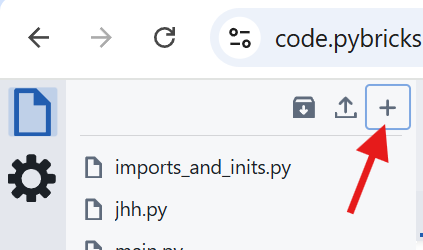

Создание кода
Перед тем как писать код, нужно создать новый файл в редакторе Pybricks.
1. Создание файла
- Откройте code.pybricks.com.
- Нажмите на кнопку "+" (New file) в левом верхнем углу.
- Выберите Python (Блочное программирование платное).
- Введите имя файла, например
helloWorld.
Скриншоты


2. Интерфейс редактора
- Центральная область: Здесь вы пишете код.
- Левая панель: Файловый менеджер и инструменты (Bluetooth, настройки).
- Нижняя панель: Консоль вывода (print) и ошибки.
- Кнопка Play (синяя): Загрузить и запустить программу.
- Кнопка Stop (красная): Остановить выполнение.
3. Сохранение
Код сохраняется автоматически в браузере. Однако рекомендуется регулярно скачивать файлы на компьютер (кнопка "Backup all files"), чтобы не потерять их при очистке кэша браузера.